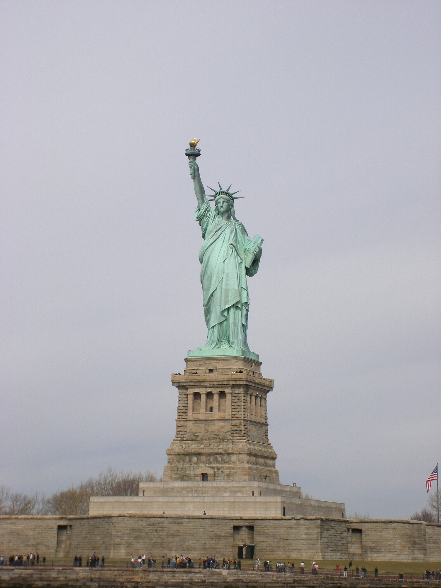
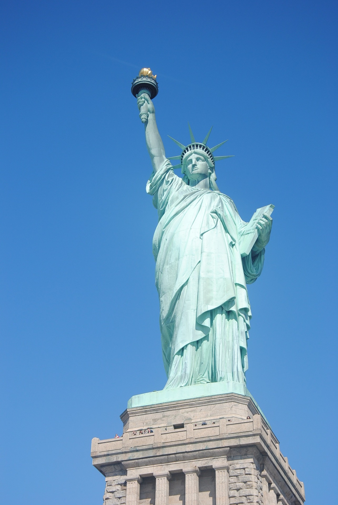

La Statut de la liberté
La statue de la Liberté ou La Liberté éclairant le monde (en anglais : Liberty Enlightening the World), ou simplement Liberté, plus connue sous le nom Statue of Liberty, est l'un des monuments les plus célèbres des États-Unis. Cette statue monumentale est située à New York, sur la Liberty Island, au sud de Manhattan, à l'embouchure de l'Hudson et à proximité d’Ellis Island. Elle fut offerte par la France, en signe d'amitié, pour célébrer le centenaire de la Déclaration d'indépendance américaine (4 juillet 1776), bien qu'elle n'ait été inaugurée que dix ans après, en 1886.

La statue tient une torche dans sa main droite et un livre dans sa main gauche. Sur le livre, on peut lire en chiffres romains « 4 juillet 1776 », jour de la déclaration d'indépendance américaine. La torche qu'elle tient dans sa main droite illumine le monde. le modèle de la Statue de la liberté serait la mère du sculpteur, Charlotte, connue pour ses traits austères. D'autres évoquent la femme de l'artiste, Jeanne-Emilie.

Le Japon et l'Allemagne possèdent leurs répliques de la légendaire silhouette de New York. En Espagne, à Cadaqués, elle est revue et corrigée par Dali. Sa statue de la Liberté brandit deux torches ! Aux États-Unis, la plus célèbre imitation est installée à Las Vegas.